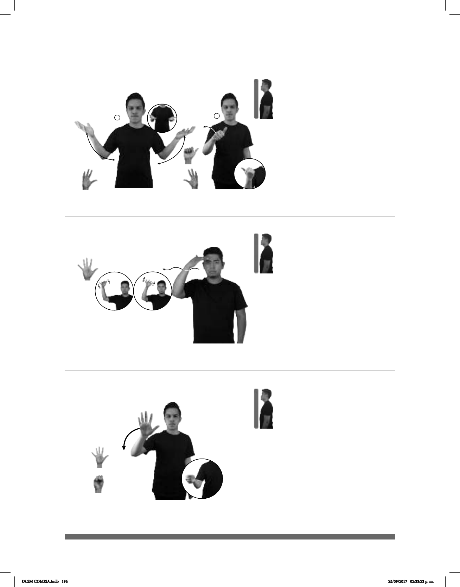

196
Seña: SC: I. SS; II. SM
I. 5.2; II. A.1
I. Palmas hacia arriba; II. La
palma inicia oblicua hacia la izquierda y
hacia abajo y termina oblicua hacia la
izquierda y hacia arriba.
I. A la altura del abdomen de los
lados al centro; II. A la altura del pecho.
I. Los brazos se mueven
formando arcos; II. El antebrazo gira y
cambia la orientación de la mano.
I. Mordiendo el labio
inferior.
sust. m. Relación sexual
voluntaria entre una persona casada y otra
que no sea su cónyuge
.
(5-G 10)
_¡ !_
ANTES pro-ÉL CASADO BIEN LUEGO ADULTERIO pro-ÉL DIVORCIAR FEO
Él estaba casado y cometió adulterio. Se divorció, ¡qué feo!
Seña: SM
5.7
Palma hacia abajo.
A la altura de las cejas, del
centro al lado derecho.
Recto mientras la mano
se agita.
sust. y adj. Persona que ha
llegado a su completo desarrollo o
crecimiento; que está en una edad en la
que, por lo general, se es maduro
intelectual y emocionalmente.
(5-G 11)
pro-TÚ YA DEBER RESPONSABLE pro-TÚ YA ADULTO
Tú ya debes ser responsable, ya eres un adulto.
Seña: SM
Seña que pasa de
5.1 a S.1
Palma hacia afuera.
Del hombro al pecho.
La mano se mueve
formando el número siete.
Continente situado
entre los océanos Atlántico e
Índico.
(5-G 12)
MAÑANA pro-YO VIAJAR ÁFRICA
Mañana voy a viajar a África.
DLSM COMISA.indb 196 25/09/2017 02:33:23 p. m.